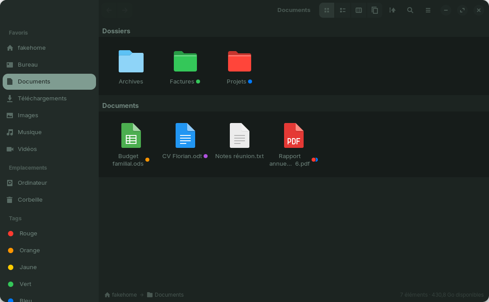
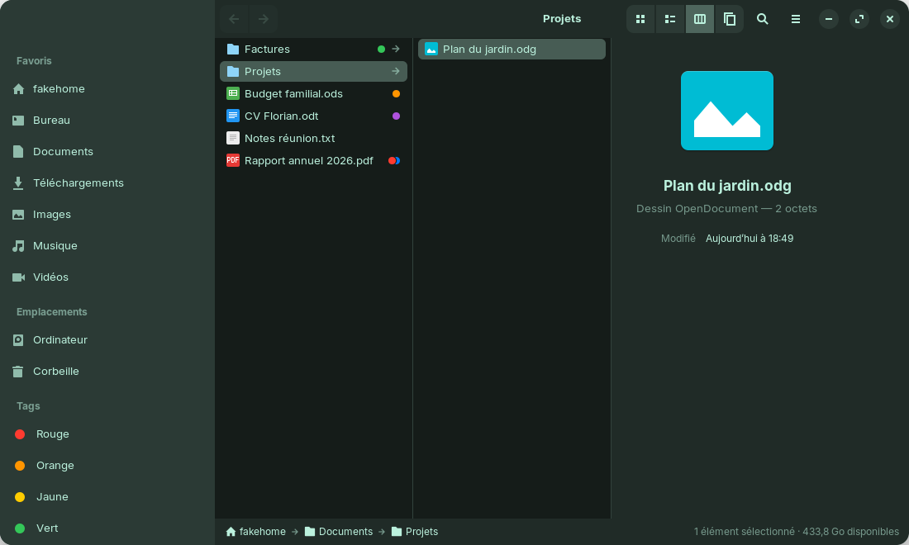
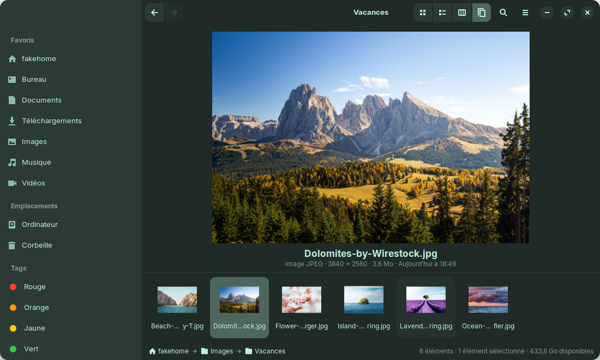
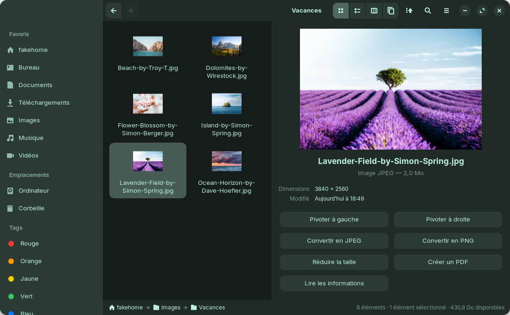
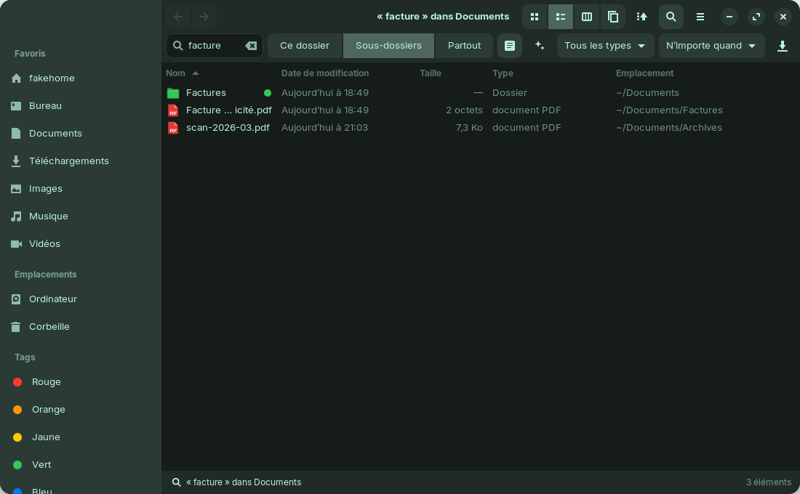
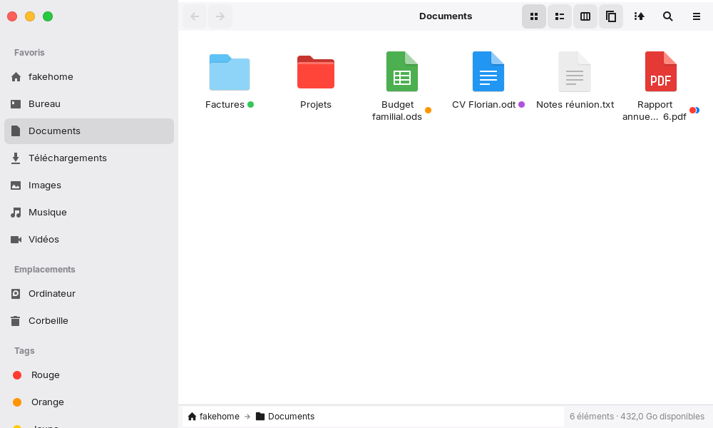
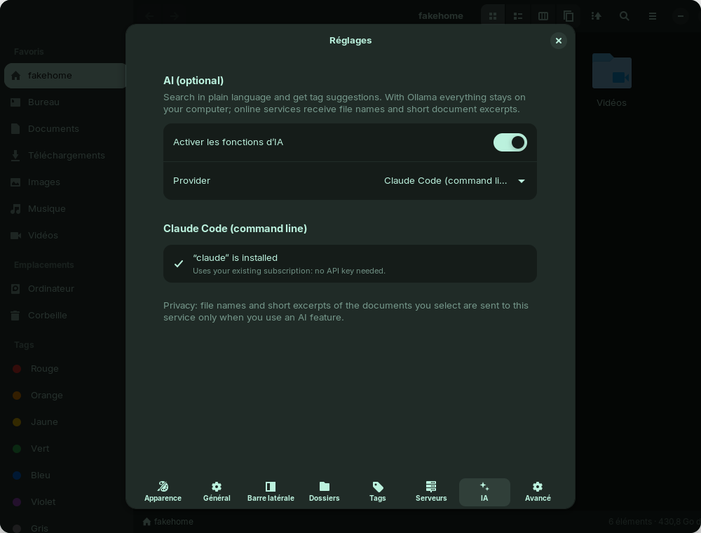

L'explorateur de fichiers
inspiré du Finder, pour Linux
Tags de couleur, vue en colonnes, galerie, actions rapides, recherche dans vos documents, thèmes macOS et Windows… Une application GNOME native, libre et gratuite.

« Je n'ai jamais trouvé un explorateur de fichiers qui me convienne vraiment. Alors j'ai développé le mien, exactement comme je le voulais. »— Florian Dérail, créateur de Galet
Tout ce qui manquait sous Linux
Les meilleures idées du Finder d'Apple, adaptées à GNOME, sans changer vos habitudes.
Tags de couleur
Clic droit → une pastille. Tous les fichiers d'un même tag en un clic depuis la barre latérale.
4 présentations
Icônes, liste, colonnes avec aperçu, galerie. Chaque dossier retient la sienne.
Recherche puissante
Dans les sous-dossiers et dans le contenu des PDF et documents. Dossiers intelligents.
Actions rapides
Pivoter, convertir, réduire une image, créer un PDF, compresser, extraire.
Confort
Annuler (Ctrl+Z), renommer sur place, onglets, glisser-déposer, Coup d'œil (Espace).
Dossiers colorés
Choisissez la couleur d'un dossier, ou laissez-le prendre celle de son tag.
Serveurs & téléphone
SMB, SFTP, FTP, WebDAV (Nextcloud, kDrive…). Envoi vers le téléphone avec Zorin Connect.
Thèmes
Système, macOS, Windows 11 ou le vôtre, en clair ou en sombre.
En images
Une vraie application GNOME, qui suit le style de votre bureau.




Votre style : macOS, Windows ou le vôtre
- Thème macOS : pastilles rouge-orange-vert, couleurs du Finder
- Thème Windows 11 : boutons rectangulaires, couleurs de l'Explorateur
- Thème personnalisé : couleur, coins arrondis, police, boutons
- Clair, sombre ou automatique


Une IA, seulement si vous le voulez
Cherchez en langage naturel (« les factures PDF de cette semaine ») et obtenez des suggestions de tags. Désactivée par défaut. Avec Ollama, rien ne quitte votre ordinateur.
Télécharger Galet
Gratuit, sans compte, sans publicité. Il faut GTK 4.12+ et libadwaita 1.5+ (Zorin OS 17+, Ubuntu 24.04+, Fedora 40+).
1 Installer en une commande
Ouvrez un terminal (Ctrl+Alt+T) et collez :
sudo apt install git python3-gi python3-gi-cairo gir1.2-gtk-4.0 gir1.2-adw-1 gnome-sushi git clone https://github.com/FloDerail/galet.git cd galet && ./install.sh
Galet apparaît ensuite dans le menu des applications. Pour en faire l'explorateur par défaut : ./install.sh --default
2 Ou télécharger l'archive
Téléchargez, décompressez, puis lancez ./install.sh dans le dossier.
Pour l'essayer sans rien installer : ./bin/galet
3 Flathub bientôt
Galet est en cours de publication sur Flathub, la boutique d'applications Linux. Il s'installera alors en un clic depuis la Logithèque.
flatpak install flathub io.github.FloDerail.Galet
Mettre à jour : cd galet && git pull && ./install.sh · Désinstaller : ./install.sh --remove ·
Tutoriel complet
Questions fréquentes
Galet remplace-t-il l'explorateur de mon système ?
Seulement si vous le souhaitez (./install.sh --default). Vous pouvez revenir à l'explorateur d'origine à tout moment avec xdg-mime default org.gnome.Nautilus.desktop inode/directory.
Où sont stockés mes tags ?
Dans les fichiers eux-mêmes (attribut étendu user.xdg.tags, norme freedesktop, compatible KDE Dolphin). Ils suivent le fichier quand vous le déplacez ou le renommez.
L'IA envoie-t-elle mes fichiers sur Internet ?
L'IA est désactivée par défaut. Avec Ollama, tout reste sur votre ordinateur. Si vous choisissez un service en ligne (Claude, Mistral, Gemini, ChatGPT), Galet vous prévient et n'envoie des noms de fichiers et de courts extraits que lorsque vous utilisez une fonction d'IA.
Galet est-il gratuit ?
Oui, totalement. C'est un logiciel libre sous licence GPL-3.0 : vous pouvez l'utiliser, l'étudier, le modifier et le partager.
Comment signaler un bug ou proposer une idée ?
Sur la page Issues du projet. Joignez le fichier ~/.cache/galet/galet.log si possible.